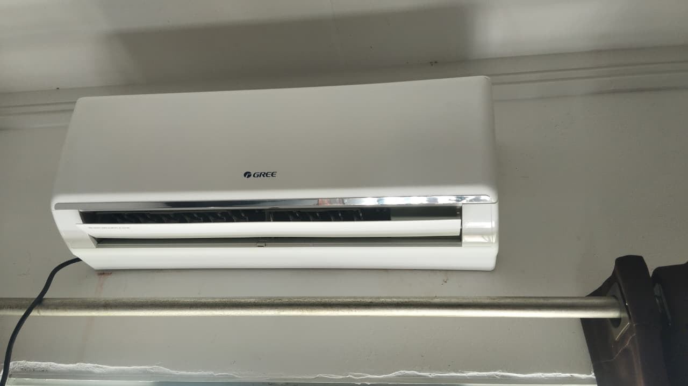
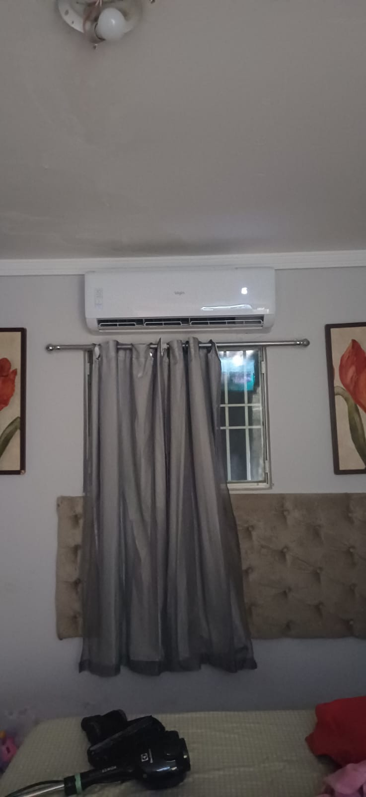
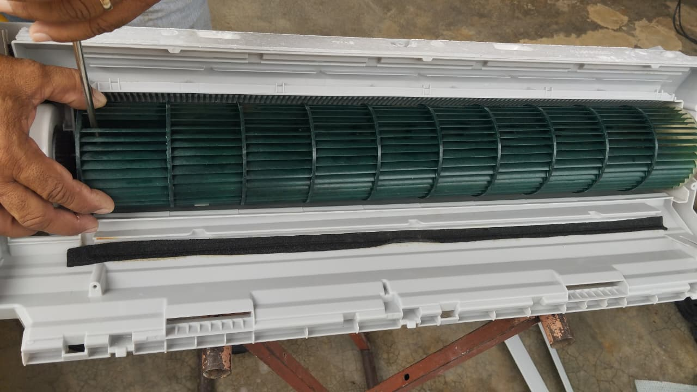
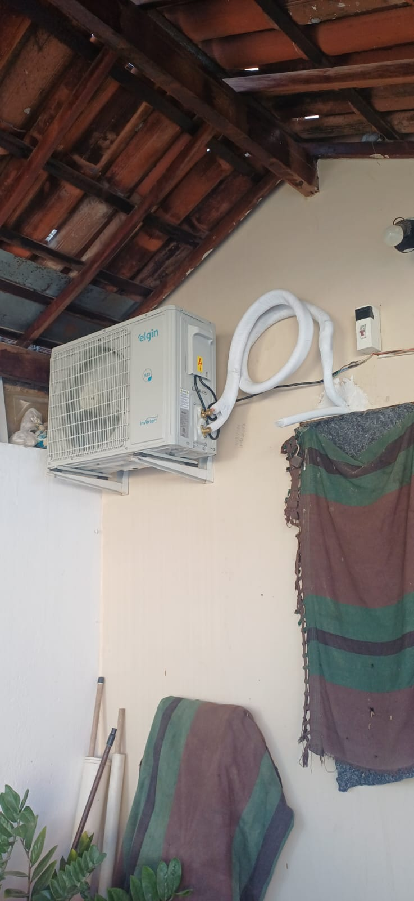
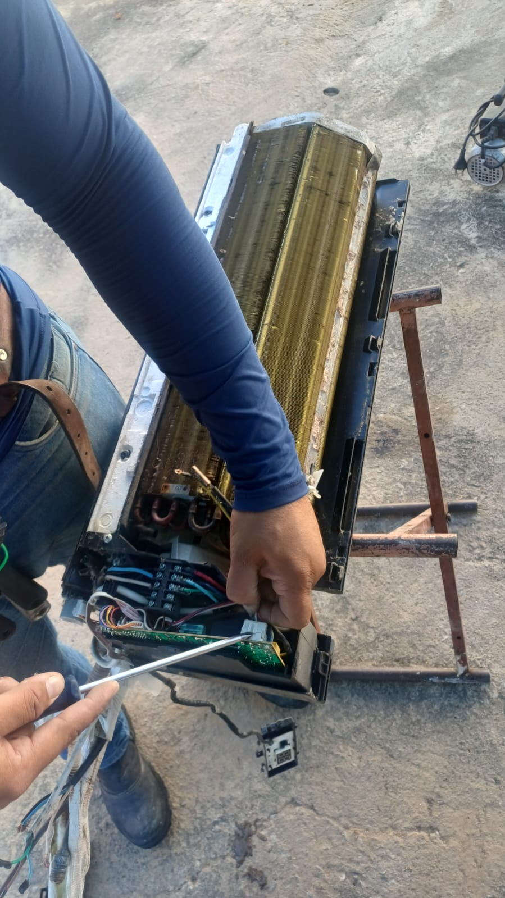
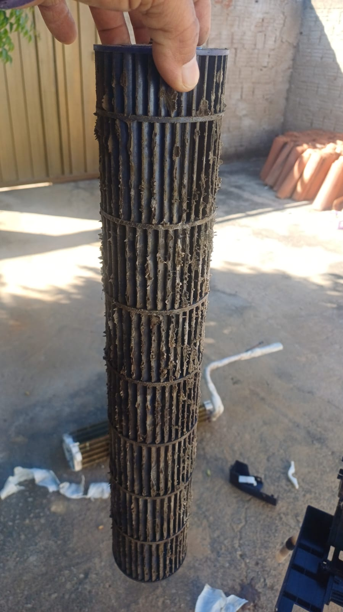
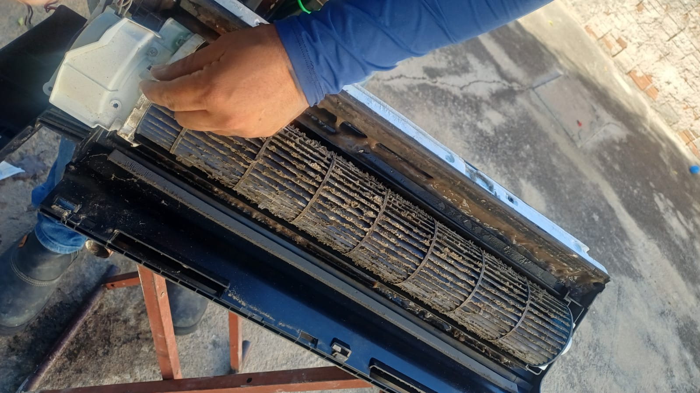

Instalação
Instalação profissional de ar condicionado de todas as marcas e modelos, seguindo as normas dos fabricantes e garantindo eficiência térmica.
Instalação, limpeza e manutenção de ar condicionado split. Garantia de conforto térmico, economia de energia e ar puro para sua casa ou empresa.
Oferecemos soluções completas em climatização e refrigeração residencial e comercial, com agilidade e máxima eficiência.

Instalação profissional de ar condicionado de todas as marcas e modelos, seguindo as normas dos fabricantes e garantindo eficiência térmica.

Limpeza profunda para eliminar ácaros, fungos e bactérias. Melhora a qualidade do ar, reduz o consumo de energia e prolonga a vida útil do aparelho.

Manutenção preventiva e corretiva com diagnóstico de vazamentos, carga de gás refrigerante e substituição de peças originais.

Preparação de tubulações, drenos e fiação elétrica durante a obra, garantindo um acabamento estético impecável na posterior colocação do split.


A FikFrio PB é referência em instalação, limpeza e manutenção de ar condicionado em Patos e região sertaneja. Buscamos sempre a excelência e a satisfação do cliente, unindo rapidez no atendimento a um rigoroso controle de qualidade.
Equipe preparada para manusear e instalar equipamentos mantendo a garantia das principais marcas.
Sabemos da importância de um ambiente fresco em nossa região. Atendemos com agilidade e cumprimos prazos.
Orçamentos sem taxas escondidas e com detalhamento total dos materiais e serviços executados.
Uso de produtos bactericidas regulamentados que não agridem a saúde de sua família ou colaboradores.
Confira fotos de alguns dos serviços de climatização de ar condicionado que realizamos na região de Patos - PB.

Assista aos nossos técnicos em ação realizando higienizações e instalações de ar condicionado com o padrão de qualidade FikFrio.
Processo de limpeza profunda da evaporadora e turbina para remoção de fungos e bactérias.
Medição de pressão, verificação de carga de gás e testes térmicos pós-instalação.
Garantia de funcionamento pleno e ar limpo para residências e escritórios.
Tem alguma dúvida sobre instalação ou limpeza de ar condicionado? Veja as perguntas frequentes ou fale com nossa equipe.
Tirar DúvidasFuncionamos de segunda a sábado, das 08h às 18h. Atendemos chamados de instalação, manutenção e higienização em domicílio em Patos e cidades vizinhas.
Trabalhamos com ar condicionado Split Hi-Wall, Cassete, Piso Teto, de todas as marcas nacionais e importadas, tanto modelos tradicionais quanto com tecnologia Inverter (mais econômicos).
Você pode falar diretamente conosco via WhatsApp no número (83) 99686-0270. Se preferir, agendamos uma visita técnica para avaliar o local e as necessidades de tubulação e elétrica.
Sim! Todos os nossos serviços têm garantia por escrito. A instalação profissional conta com garantia de mão de obra e os reparos de peças ou recarga de gás também possuem cobertura específica.
Não cobramos taxa de visita técnica para orçamentos na zona urbana da cidade de Patos - PB. Para outras localidades vizinhas na Paraíba, consulte condições pelo WhatsApp.
Atendemos em toda a cidade de Patos - PB e regiões vizinhas. Entre em contato.
Seg - Sáb: 08:00 - 18:00
Rua José Crispim, 189 - Monte Castelo, Patos - PB, 58707-060